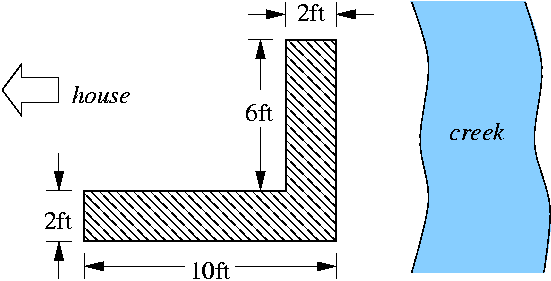

Some people think GNU/Linux is a good operating system, but has not enough applications to make it succeed in the market. Although this might be true for the desktop area, it is certainly wrong for numerical workbenches. In this field GNU/Linux users have many different (and excellent) choices -- in fact too many to introduce them all. Therefore, this series of articles introduces three outstanding applications:
To find out about more numerical workbenches, check out http://sal.kachinatech.com/A/2/
What can these programs do? Isn't paper and pencil -- er -- a spreadsheet program enough?
The main application areas of numerical workbenches are:
However, because all of them provide complete programming languages to the user and, moreover, are designed to be extended, the number of numerical problems they can solve is almost limitless.
Now, what the heck is numerical math anyhow? Numerical Mathematics is the branch of math that develops, analyzes, and applies methods to compute with finite precision numbers. Computer hardware, for example, uses numerical math.
Why do computers work with finite precision numbers? Why has nobody developed a scheme that allows for the storage of exact numbers?
time(sum(sqrt(i), i = 1..10^6));
takes about 40 seconds, whereas getting the approximate result with Tela-1.32
tic(); sum(sqrt(1:10^6)); toc();
takes 0.31 seconds, that is, the answer in finite precision is returned over 100 times faster! Put another way, we can crunch hundred times more data with finite precision numbers in the same time slice.
In this article series, we point out the similarities among the three applications that we are going to discuss. We will use GNU/Octave in most of the examples. Where there are important differences you should be aware of, we have put a Differences paragraph at the end of the section.
Technical details for the terminally curious have been put in Details sections.
To give you a hands-on experience, let us start each of the applications, request help on a function, and then quit.
cspiel@hydra:~/articles/numerical-workbenches $ octave
GNU Octave, version 2.1.34 (i686-pc-linux-gnu).
Copyright (C) 1996, 1997, 1998, 1999, 2000, 2001 John W. Eaton.
This is free software with ABSOLUTELY NO WARRANTY.
For details, type `warranty'.
*** This is a development version of Octave. Development releases
*** are provided for people who want to help test, debug, and improve
*** Octave.
***
*** If you want a stable, well-tested version of Octave, you should be
*** using one of the stable releases (when this development release
*** was made, the latest stable version was 2.0.16).
octave:1> help diag
diag is a built-in function
- Built-in Function: diag (V, K)
Return a diagonal matrix with vector V on diagonal K. The second
argument is optional. If it is positive, the vector is placed on
the K-th super-diagonal. If it is negative, it is placed on the
-K-th sub-diagonal. The default value of K is 0, and the vector
is placed on the main diagonal. For example,
diag ([1, 2, 3], 1)
=> 0 1 0 0
0 0 2 0
0 0 0 3
0 0 0 0
octave:2> quit
cspiel@hydra:~/articles/numerical-workbenches $
Alternatively use exit or press C-d to quit
GNU/Octave.
GNU/Octave offers the user function-name completion, this is, when only part of a function's name is entered and the user hits Tab, the partial name is completed as much as possible. A second Tab displays the list of remaining choices.
cspiel@hydra:~/articles/numerical-workbenches $ scilab
we get a new X-window in which the Scilab interpreter runs. Asking for help opens an xless(1x) window. (Both these links are screenshots, so click on them.)
To exit Scilab, enter quit or exit.
Scilab can also be launched in non-window mode by passing the
-nw option to it:
cspiel@hydra:~/articles/numerical-workbenches $ scilab -nw
===========
S c i l a b
===========
scilab-2.6
Copyright (C) 1989-2001 INRIA
Startup execution:
loading initial environment
-->help diag
The help system then uses the text output, too.
cspiel@hydra:~/articles/numerical-workbenches $ tela
This tela is a tensor language, Version 1.32.
Type ?help for help.
->TAB completion works; try docview() and source("demo")
>help diag
diag(V, K) (V is a vector) returns a square diagonal matrix, with
vector V on the main diagonal (K == 0, default), the K-th super
diagonal (K > 0) or the K-th sub-diagonal (K < 0).
diag(M, K) (M is a matrix) returns the main diagonal (K == 0,
default), the K-th super diagonal (K > 0), or the K-th sub-diagonal
(K < 0) of M as a vector. M need not necessarily be square.
>quit()
63 instructions, 0 arithmetic ops.
0.0063 MIPS, 0 MFLOPS.
cspiel@hydra:~/articles/numerical-workbenches $
Tela can also be exited by pressing C-d.
Now that we know how to start and exit the programs, let us look at them in action.
We want to see:
1 + 2 * 3 ^ 4 should be treated
as 1 + (2 * (3 ^ 4)), yielding
163. It should not be treated as
((1 + 2) * 3) ^ 4, which equals
6561,10^6, andHere we go.
cspiel@orion:~/articles/numerics $ octave
All three programs are console-based. That is, the user gets a prompt
whenever the application is ready to accept input. We enter our first question
as we write it on paper. Hitting return terminates the line, the program
evaluates it, and returns the result in variable ans (more on
variables later).
octave:1> 1 + 2 * 3 ^ 4
ans = 163
Aha, obviously GNU/Octave knows elementary-school math!
Our second question requires the logarithm function log,
which returns the natural logarithm of its argument; this is, the logarithm to
base e.
octave:2> log(10^6) / log(2)
ans = 19.932
We conclude that 1,000,000 needs 20 bits to be stored.
Finally, how steep is our driveway? What we need here is an angular
function, namely the arctangent, written as atan(argument).
octave:3> atan(0.50 / 7.0)
ans = 0.071307
Hmm, ain't that a bit too flat? Digging out the wisdom of long forgotten math classes, we remember that the arctangent of 1 is 45 degrees. Let us check this!
octave:4> atan(1)
ans = 0.78540
Ouch, off by a factor of 57! Do we have to throw the program away? Wait -- 57 equals almost 180 over pi. This means GNU/Octave has returned the result in radians, not in degrees. All angular functions work in units of radians, this is, an angle of 360 degrees is equivalent 2 pi radians.
We try again, supplying the correct conversion factor:
octave:5> atan(0.50 / 7.0) * 360/(2 * 3.14)
ans = 4.0856
Approximately 4 degrees, that looks good. Our garage certainly won't get flooded in the next deluge.
Details
abs(arg), the sign-function sign(arg), and the square root
sqrt(arg).log(arg), and to the base of 10: log10(arg). The
exponential exp(arg) is the inverse of
log(arg).
sin(arg), cos(arg), tan(arg),
sec(arg), csc(arg); asin(arg),
acos(arg), atan(arg), acsc(arg);
sinh(arg), cosh(arg), tanh(arg),
sech(arg), csch(arg) asinh(arg),
acosh(arg), atanh(arg), acsch(arg).Differences
ans.1i,
-8.99I, 324J. Scilab defines a special constant for the
imaginary unit sqrt(-1), which is written <%i>. Therefore,
Scilab's imaginary literals look like products: -8.99*%i,
%i*324.In the last section we have not gained much in comparison with a pocket calculator, have we? The first feature where our programs beat pocket calculators and spread-sheets are names that we can give parameters or results; these are called variables.
Assume our better half wants us to build a garden in the yard, but we want to watch basketball. Therefore we quickly need a hard figure that proves we don't have enough compost for the desired size. Ha -- brilliant idea!
From our little plan we take the following lengths in feet:
houseside_length = 10
creekside_length = 6
width = 2
Our better half also said the layer of new soil ought to be at least five inches, so
height = 5 / 12
GNU/Octave to the rescue!
octave:1> houseside_length = 10
houseside_length = 10
octave:2> creekside_length = 6
creekside_length = 6
octave:3> width = 2
width = 2
octave:4> height = 5 / 12
height = 0.41667
octave:5> volume = (houseside_length + creekside_length) * width * height
volume = 13.333
The compost box is 6' x 4' and currently holds eight inches of usable compost.
octave:6> box_width = 6
box_wight = 6
octave:7> box_depth = 4
box_depth = 4
octave:8> compost_height = 8/12
compost_height = 0.66667
octave:9> compost_volume = box_width * box_depth * compost_height
compost_volume = 16
Oh no, we have just dug our own grave. We have got enough compost! What about taping the match on the VCR?
Details
Until now we have not exploited where computers are really good at: repetitive work.
Say we got a long receipt from the grocery store. [Your ad here!] How can we get the VAT in Dollars on each item given the gross amount and the VAT rate in percent? The formula
vat_percent / 100
vat = --------------------- * gross_amount
1 + vat_percent / 100
is trivial, but we want to save us repeated typing.
The list of all gross amounts in the receipt forms what numerical programs call a vector. Vectors are built from values by enclosing these values in square brackets and separating them with commas like this:
octave:1> gross = [1.49, 4.98, 0.79, 5.49, 0.96, 0.96, 0.96, 0.96]
gross =
1.49000 4.98000 0.79000 5.49000 0.96000 0.96000 0.96000 0.96000
The vector is built from left to right using our supplied numbers in the same order that we enter them.
Wouldn't it be wonderful if we simply wrote: gross *
(vat_percent/100) / (1 + vat_percent/100) and get the VAT of each item?
It really is that simple.
octave:2> vat_percent = 7
vat_percent = 7
octave:3> a = (vat_percent/100) / (1 + vat_percent/100)
a = 0.065421
octave:4> vat = a * gross
vat =
0.097477 0.325794 0.051682 0.359159 0.062804 0.062804 0.062804 0.062804
Wow -- it works! For the first time we have really gained convenience and expressiveness: a single multiplication sign performs eight multiplications in a row.
What has happened? vat_percent is a single value, which is
called scalar in numerics to distinguish it from vectors. Well, if
vat_percent is a scalar, then vat_percent/100,
1 + vat_percent/100, and a are scalars, too.
Finally, scalar a must be multiplied with vector
gross. What we wanted and what happened was that a was
multiplied in turn with every element of gross. This holds for
every operator, not only multiplication! In general
vector op scalar
and
scalar op vector
apply scalar to every element in vector according to operation op. In our example, this is as if we had written the following
vat(1) = a * gross(1)
vat(2) = a * gross(2)
...
vat(8) = a * gross(8)
where we have introduced a new piece of syntax: vector indexing. Each
element (a scalar) of a vector can be accessed by its index, which is
the number of it's place in the vector. The index is written in parenthesis
after the vector. For example, to get the second element in
gross, we write
octave:5> gross(2)
ans = 4.9800
Elements in vectors can be assigned to with the same syntax. Just place the
indexed vector to the left of the assignment sign, for example, gross(2)
= 5.12.
What else can be thought of as a vector of numbers besides our receipt? Any series of values! Most of the time the values will be related, like the temperature measured each day at 8am, the diameters of a batch of metal rods, the velocities of all westbound traffic across Buffalo Street at the corner of West Clinton Street on Wednesday April 18, 2001. As we are living in the Digital Age, many more series of data fit the notion of a vector: every piece of music on a CD is a vector of sound amplitudes and the indices mark discrete moments in time.
Details
sin, can be used on
vectors.
v = [0.12, 0.89, 0.78, 0.10]
sin(v)
or
sin([0.12, 0.89, 0.78, 0.10])
Differences
gross = #(1.49, 4.98, ...,
0.96).gross[2].
Warning for C programmers: Though the square brackets look like C, the lowest
index always is 1.
 Christoph Spiel
Christoph Spiel
{kind=link}
{kind=link}